西海みずき信用組合 地域振興室
県内最大の探究の発表会の主催と事務局を4年。個別の高校にプログラムの策定と授業の実施を伴う2年間の通年伴走。離島を含む県内各地の高校への出張授業。全県を対象にしたオンライン探究相談会の立ち上げ。大人の探究伴走者を育てる連続講座。独自に作った教材やワークシートだけで110点を超えました。これは、金融機関の本業ではありません。それでも、元気に子どもたちが育たない地域に未来は無いと考え、業務の枠を越え組織として教育支援を続けています。
ここに並べたのは、すべて自分たちで作った教材の実物です。生徒用ワークシート、先生用の進行メモ、授業の投影資料、指導案。既製品は使わず、学校ごと・その日の50分ごとにゼロから作っています。2026年9月時点で約110点、うち代表的なものを並べました。
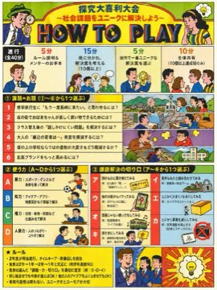
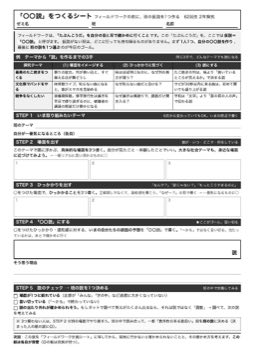
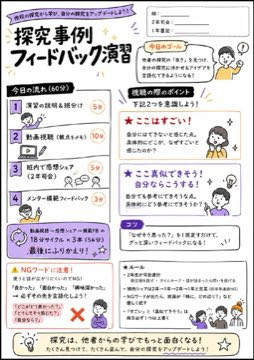
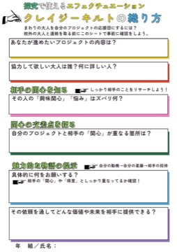
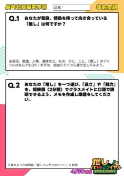
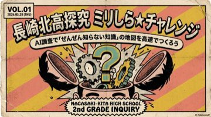
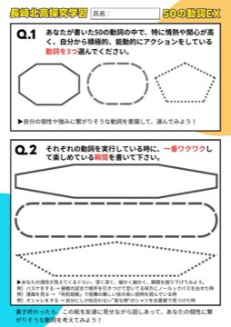
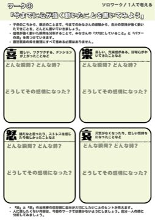
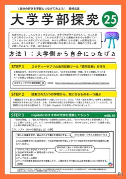
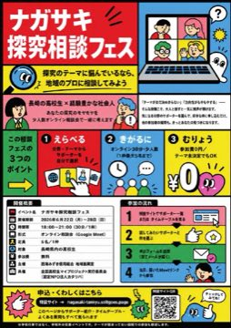
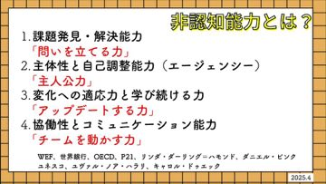
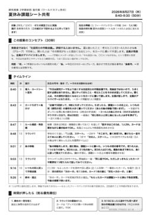
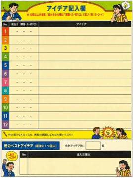
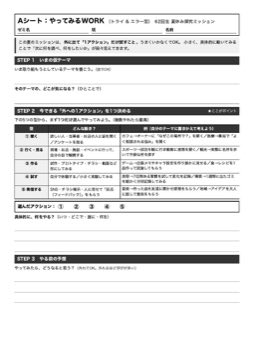
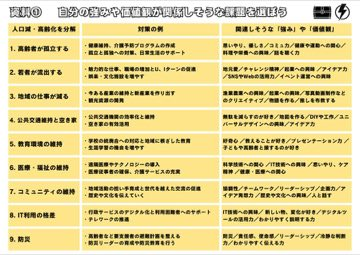
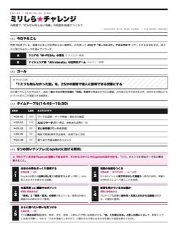
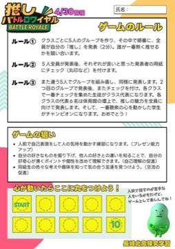
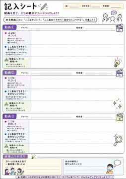
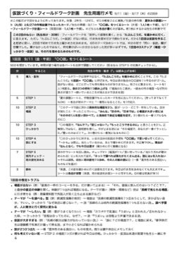
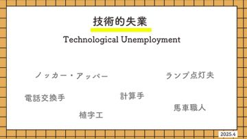
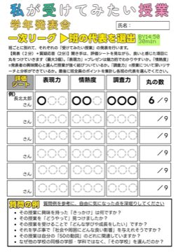
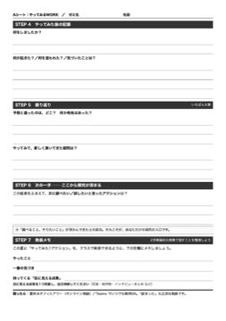
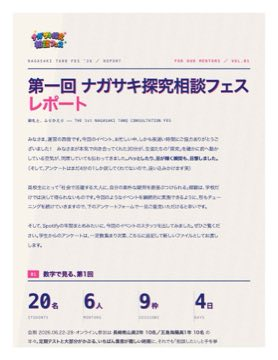
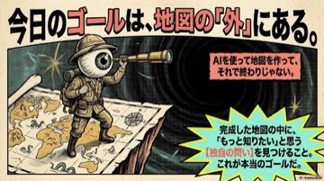
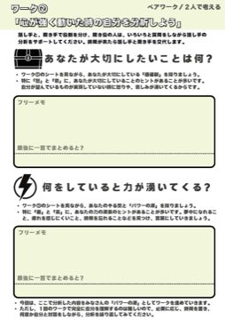
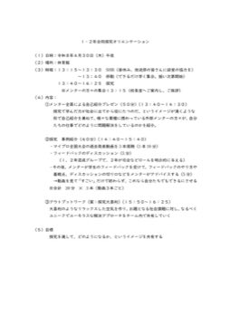
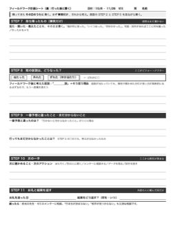
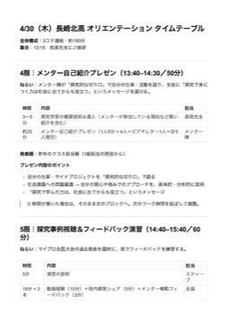
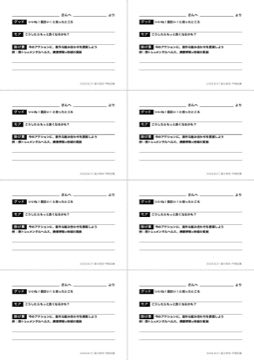
| 取り組み | 時期 | 規模 | 立場 |
|---|---|---|---|
| スポットでの高校支援 （高校への出張授業・発表会の講評・社会人講師の紹介など） | 2020年〜 | 五島海陽高（2コマ＋発表会の指導助言）、長崎南高SSH「未来デザインスクール」（2年連続）、佐世保北高、佐世保西高、佐世保南高、活水高校、壱岐商業高校など | 講師・指導助言者・コーディネーター |
| マイプロジェクト長崎県Summit | 2022年度〜（4回開催） | 県内8校・26プロジェクト・高校生82名／社会人サポーター23名（2025年度実績） | 県事務局・主催 |
| 長崎北高校 探究学習支援（Polaris-Q） | 2025年度〜 継続中 | 1学年240名規模に通年伴走／社会人メンター9名／2年生は12ゼミ制 | プロジェクトリーダー |
| みんなの探究LAB | 2025年度〜 継続中 | 教員・地域の大人が探究を体験する講座。三菱みらい育成財団の採択事業 | 運営法人の理事として参画 |
| ナガサキ探究相談フェス | 2026年6月 | 4日間9枠・高校生20名・メンター6名／申込サイトも自前構築 | 企画・運営 |
高校の「総合的な探究の時間」は、年間を通した授業です。その年間プログラムの設計から、毎回の教材づくり、当日の進行までを、学校の外にいる社会人チームが中心になって担っている——というのが、この事例のいちばん特殊なところです。以下は、2年分の授業の内容と資料をそのまま並べたものです。
きっかけは、2024年秋。長崎県のポータルサイトに当組合が載せた「民間連携を求める学校向けの探究支援」の案内に、長崎北高の先生が応募してくれたのが始まりでした。「探究学習が必修になってからの3年を振り返り、来年の新1年生から始まるプログラムを刷新したい」。声をかけて集まった社会人8名で支援チームをつくり、Polaris-Q と名づけました。北極星（長崎北高のスローガン）と Question（問い）です。
ほぼ月1回のペースで学校に入るスタイルが、2年以上続いています。打ち合わせは1回およそ2時間、休日の対面が1回5時間30分。開始が21時前後だった回が14回——全員が本業を終えてから集まる時間です。
学校に立った23時間の裏に、55時間の打ち合わせがあります。そしてこの数字に、教材をつくっている時間は1分も入っていません。ワークシート、先生用の進行メモ、指導案、投影資料、動画。110点の制作時間も、学校までの移動時間も別です。
| 日付 | 内容 | 時間 | 入ったメンター |
|---|---|---|---|
| 2024.07.11 | 探究発表会の講評 | 2時間30分 | 3名 |
| 2024.10.31 | 1年生 探究発表の講評 | 1時間00分 | 3名 |
| 2025.04.30 | 1年生プログラム開始。メンター自己紹介プレゼン＋推しバトルロワイヤル（3コマ連結）。授業後に先生方向けの「50の動詞」レクチャーも実施 | 3時間15分 | 6名 |
| 2025.06.18 | 50の動詞ワークの深掘り／大学学部探究のオリエンとリサーチ実演（2コマ）。別室で教員向け説明会を並行、放課後に動画教材を撮影 | 2時間00分 | 5名 |
| 2025.09.10 | 大学学部探究の発表会（クラス内発表 → 代表が学年発表）。放課後に生徒の相談タイム | 2時間15分 | 6名 |
| 2025.10.08 | エンパワ探究のオリエン（体育館）。50の動詞のアップデート＋エンパワ探究の説明。授業後にメンターで振り返り会 | 2時間10分 | 4名〜 |
| 2026.02.04 | クラス内発表会（各班5分・発表4分＋メンターのフィードバック1分、代表1班を選出） | 1時間10分 | 6名＋ゲスト |
| 2026.02.26 | 1年間の最終発表会（体育館・代表7チーム・採点と表彰） | 1時間55分 | 7名 |
| 2026.04.30 | 2年生プログラム開始。1・2年合同オリエン（3コマ連結・体育館） | 2時間45分 | 6名（欠席者はビデオレター） |
| 2026.05.14 | ファシリテーション講座 | 50分 | 竹下スティーブ |
| 2026.05.21 | 社会課題のブレイクダウン（ロジックツリー） | 50分 | 森恭佑 |
| 2026.05.28 | ミリしらチャレンジ（AIリサーチ） | 45分 | 西信好真 |
| 2026.07.09 | メンター壁打ち会（1ゼミ1教室をメンターが巡回・先生とペアで対応） | 1時間50分 | 3名 |
| 日付 | 開始時刻 | 日付 | 開始時刻 | |
|---|---|---|---|---|
| 2025.02.07（金） | 21:00 | 2025.12.04（木） | 20:00 | |
| 2025.02.20（木） | 21:00 | 2026.02.02（月） | 19:00 | |
| 2025.03.06（木） | 21:00 | 2026.02.23（月） | 19:00 | |
| 2025.03.13（木） | 21:00 | 2026.04.01（水） | 20:00 | |
| 2025.03.25（火） | 14:00 | 2026.04.07（火） | 20:00 | |
| 2025.04.09（水） | 21:00 | 2026.04.19（日） | 13:00（対面・5時間30分） | |
| 2025.04.24（木） | 21:00 | 2026.04.29（水） | 20:00 | |
| 2025.05.26（月） | 20:55 | 2026.07.01（水） | 20:00 | |
| 2025.06.05（木） | 20:55 | 2026.08.07（金） | 20:00 | |
| 2025.06.16（月） | 21:00 | 2026.09.08（火） | 20:00 | |
| 2025.08.26（火） | 21:00 | |||
| 2025.09.08（月） | 21:00 | |||
| 2025.09.23（火） | 20:54 | |||
| 2025.09.29（月） | 21:00 | |||
| 2025.10.06（月） | 21:00 | |||
| 2025.10.13（月） | 19:00 |
1年目は「自分の好きを知る」から始めて「社会とつなぐ」へ、最後に「チームで実践する」へ進む3段構成にしました。キーワードはエンパワーメント——内面的な抑圧から解放し、生徒一人ひとりの本来の力を引き出すこと。いきなり社会課題には向かわせません。
最初に生徒へ渡したのは、ワークではなく「時代の話」でした。今は存在しない仕事のクイズから入り、AIによる技術的失業、そこで必要になる非認知能力、3年間のプログラムの流れへとつなぎます。
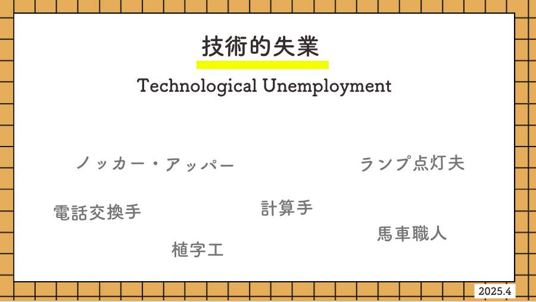
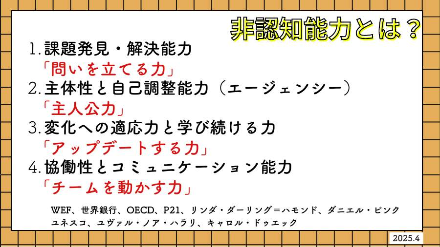
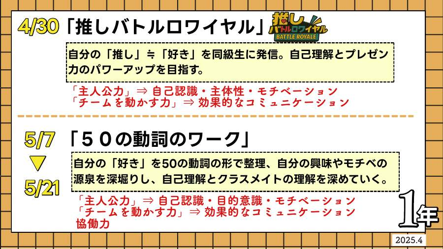
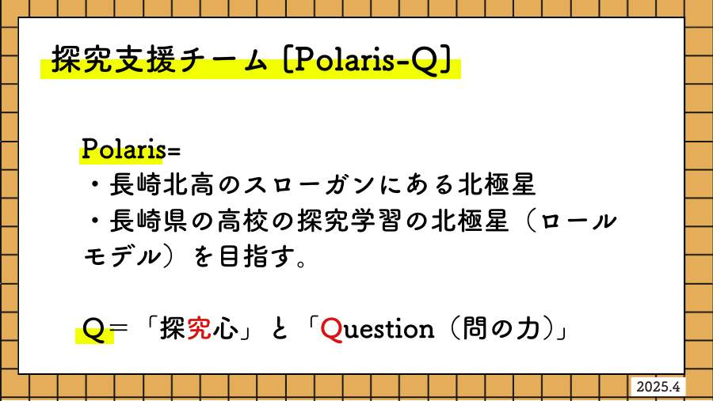
クイズから入る理由：「これからはAIによる変化の時代だから探究で身につく力が大事」と大人が言っても、生徒には他人事です。朝、窓を叩いて人を起こす仕事がかつて実在した——その1枚から入ると、職業が消えることが具体になります。「コンピューター」がもともと計算をする人間の職名だった、という話も同じエピソードです。
自分の「推し」の良さを2分でクラスメイトに語る。探究の最初の一歩「好き・興味」を、いちばん語りやすいものから始めます。また、新入生同士の交流を促進する狙いもあります。
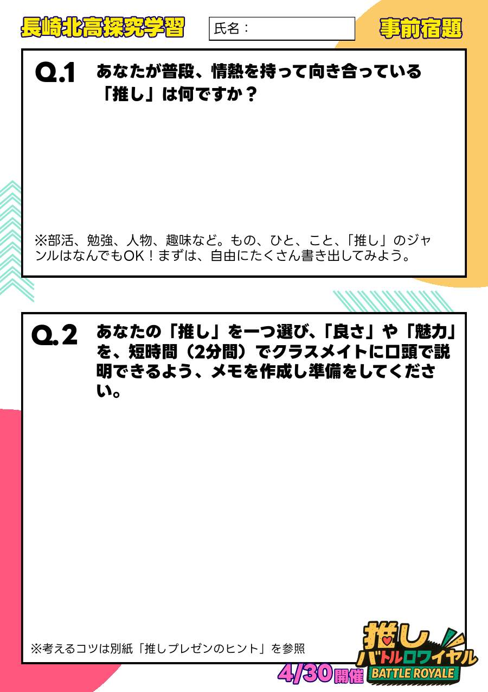
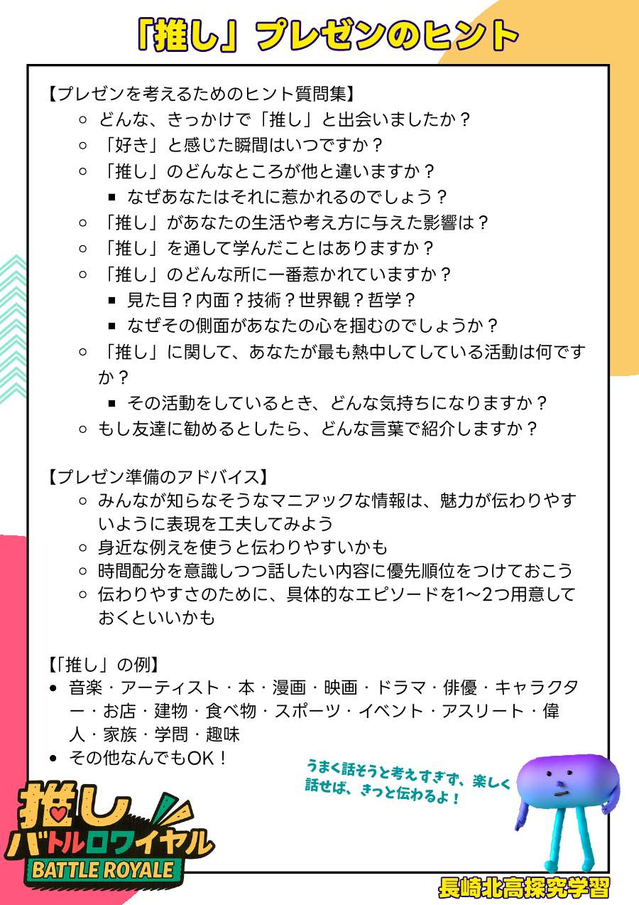
「自分の好きな推しを語る」形にすることで、自己表現のハードルを下げる。ここで出てきた「好き」は、このあと1年かけて何度も参照されます。
好きな行動を動詞で50個書き出し、そこから3つを選んで深掘りする。名詞ではなく動詞で捉えるのがポイントです。
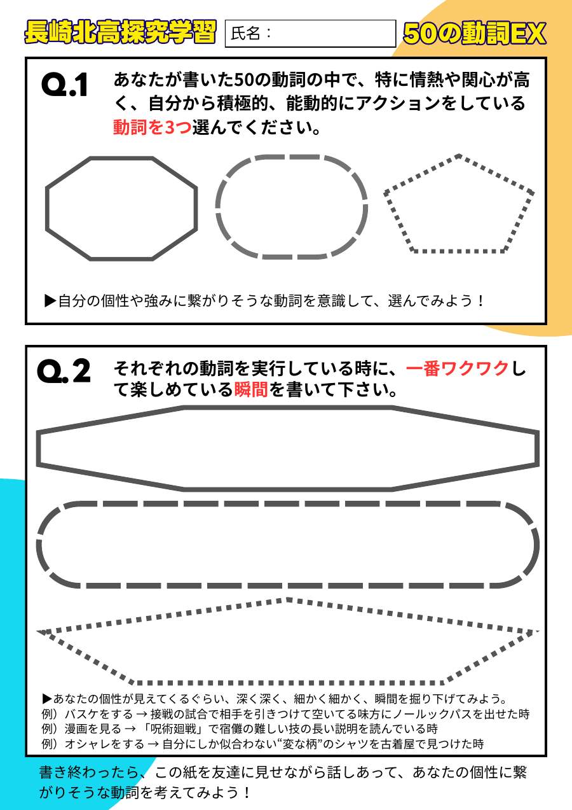
例の書き方に工夫がある：「バスケが好き → 接戦の試合で相手を引きつけて空いてる味方にノールックパスを出せた時」「漫画が好き →『呪術廻戦』で宿儺の難しい技の長い説明を読んでいる時」。ここまで具体的な形で50種類を書かせることで、同じ「バスケが好き」でも生徒一人ひとりの異なる個性が見えてきます。
この「自分を表す動詞」は、2年目のロジックツリーの回のチェックインでも再利用しました。1年前のワークを、新しいチームの関係づくりの入口に再活用しました。
「大学で何が学べるかなんて、たぶんあんまり知らないよね」という呼びかけから始まるワークシート。自分の「好き」を学部・学科というリアルな進路へつなげ、受けてみたい講義名と担当教員のレベルまで深く掘り下げて発表。全員の調査を集めて「私が受けてみたい授業図鑑」を作り上げます。
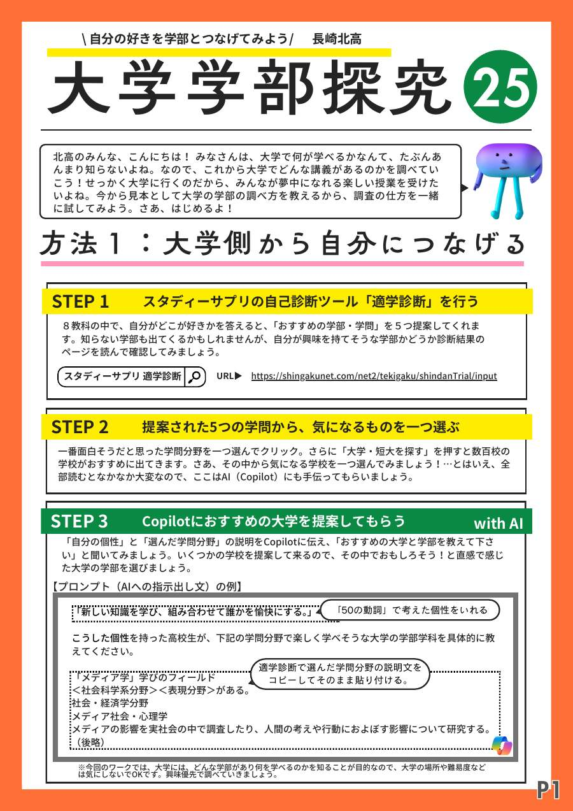
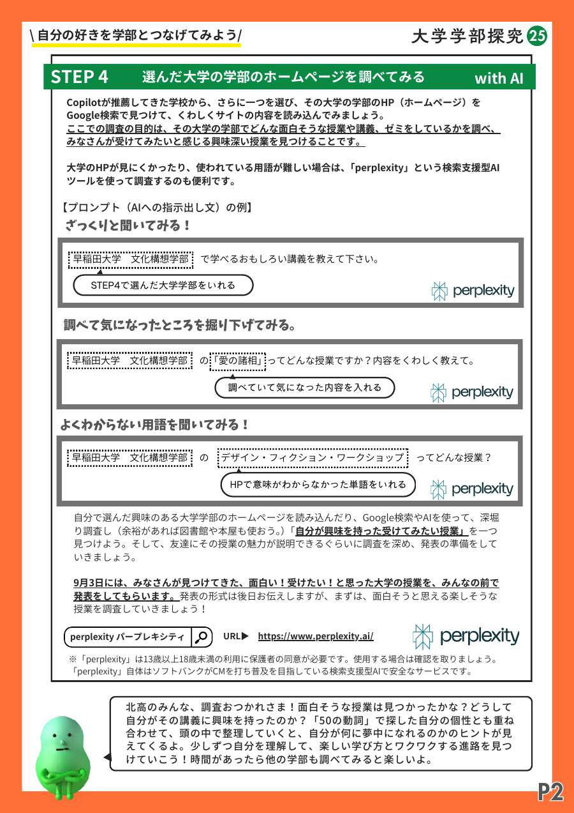
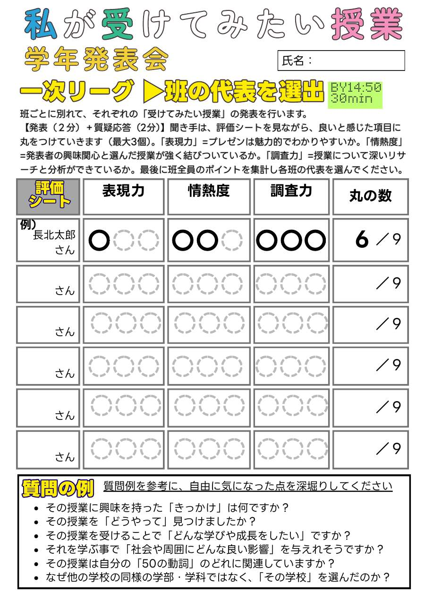
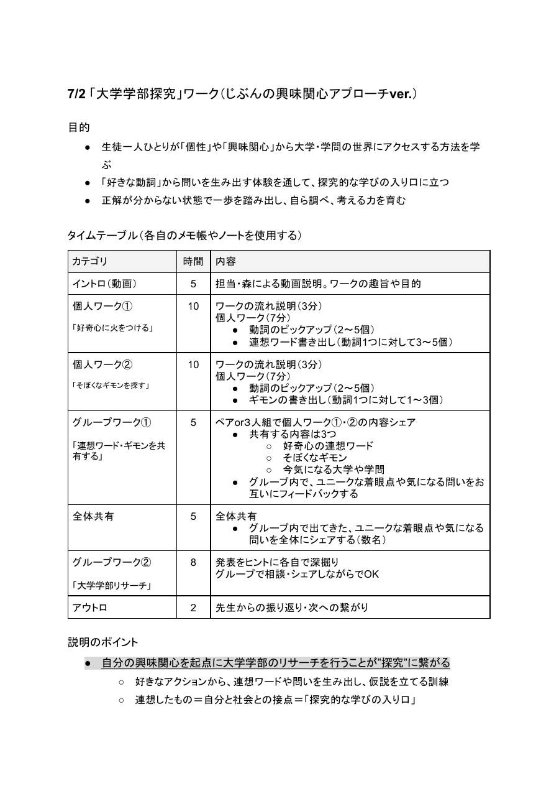
動画教材も自作。すべての授業に参加はできないので、紙だけでなく、授業の導入を5分の動画にして生徒に共有する回もありました。
1年目からAIを使わせている：プロンプトの例文をシートに刷り込み、50の動詞で見つけた自分の個性をそのままAIへの指示文に入れる設計にし、実践的な使い方を例示しています。「新しい知識を学び、組み合わせて誰かを愉快にする」——こうした個性を持った高校生が楽しく学べそうな学部を具体的に教えてください、という具合です。2年目のAIリサーチ実習の「ミリしらチャレンジ」は、この延長線上のプログラムです。
あえて対象を学内に限定し、友人の悩み解決や夢の実現にチームで挑みます。1年目からいきなり地域課題に向かわせると、自分との距離が遠すぎて手が止まる生徒が増える。まずは身近な人を一人エンパワーする経験を通す、という狙いです。
やってみて分かったのは、チームで何かを作るところまでは行っても、振り返って次につなげるところまで届きにくいということでした。ここが2年目の大きな宿題になります。
毎週木曜の50分。1学期はクラス単位で探究本番に向けた土台をつくり、2学期からテーマ別の12ゼミへ移りました。
2年生の最初の授業では、探究の全国大会の優秀チームの発表動画3本を見て、探究のイメージを掴んでもらいます。その後、班でフィードバックし合う60分を用意。感想を言わせるのではなく、盗める部分を言語化させます。
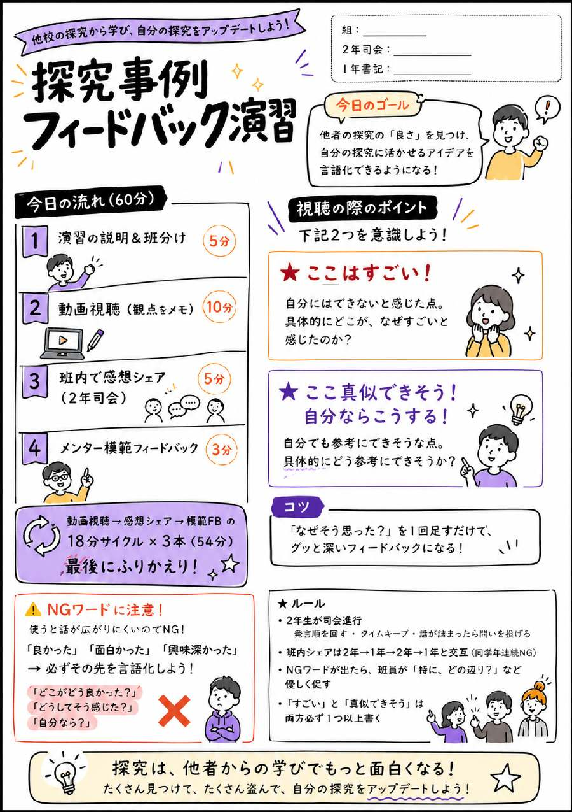
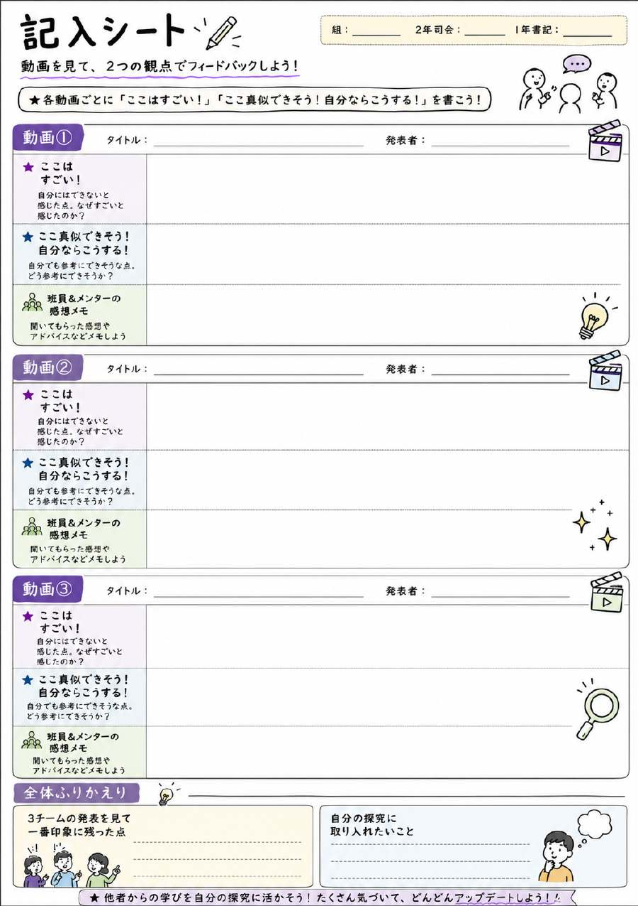
紙に置いた仕掛け：「良かった」「面白かった」「興味深かった」をNGワードに指定して、その先を必ず言語化させる。2年生が司会・1年生が書記、発言は学年交互（同学年の連続はNG）。
社会課題に、実現可能性を問わないユニークな解決策をぶつける40分。1・2年合同開催となったため、1年生にも探究の自由さと楽しさを知ってもらうためのプログラムでもあります。そして「自由に考えて」と言われると止まってしまう生徒のために、発想を3つの軸の組み合わせで考えられるようなワークシートに落としました。
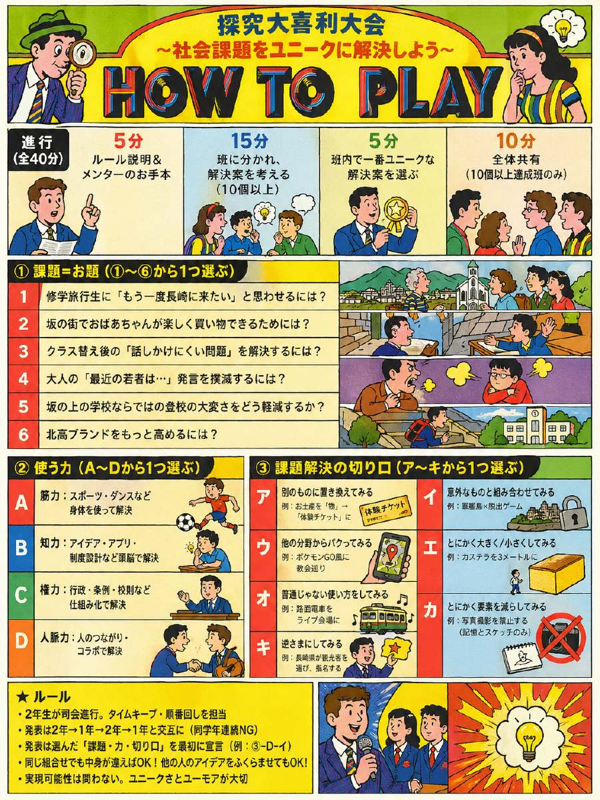
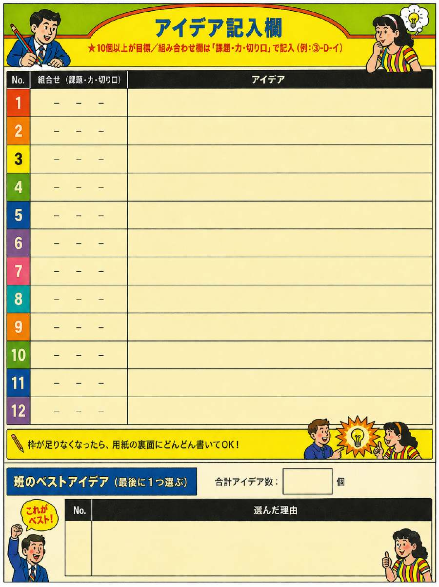
起きたこと：約480名の体育館で、多数の生徒が自主的に手を挙げて発表。「坂の街でおばあちゃんが楽しく買い物するには → プロテインを配っておばあちゃんをマッチョにする」。先生方から「あそこまで議題で盛り上がるのは珍しい光景」「補助があると活発に意見が出る」。
手が止まる原因の多くは発想力ではなく「間違えたくない」という過度な「正解主義」です。緩い名前、実現可能性を問わないルール、質より量、リラックスしたデザイン——正解主義を崩す仕掛けをひとつの紙に複数重ねています。発表は「取り組む課題-使う力-解決へ向かう切り口」というフレームに当てはめて最初に宣言する形にして、何を話すかも迷わせないようにしました。
5月は3週連続で、それぞれ別のメンターが1コマずつ担当しました。会議の回し方（心理的安全性・3つの役割・4つの会議の種類）、大きすぎる課題を割る技術（What / Why / How の3型）、そしてAIで未知の分野を調べる方法。生徒用のハンドブックや解説プリントも、担当がそれぞれ用意しています。
この3回は、授業の様子を字幕から起こした詳細アーカイブを別ページにまとめました。タイムスタンプ付きで、配布資料も開けます。→ メンター授業アーカイブ（2026年5月・3授業）
「1ミリも知らなかった分野」をAIで25分調べ、人に説明できる状態まで持っていくというゲーム形式で、AIを使った調査を実践的に学ぶ授業。お題はケニアのモバイル送金 M-PESA と、ナイジェリア発のアフロビーツ。この2点を25分で知ったかぶりできるようにする。
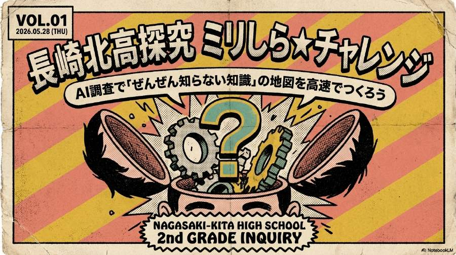
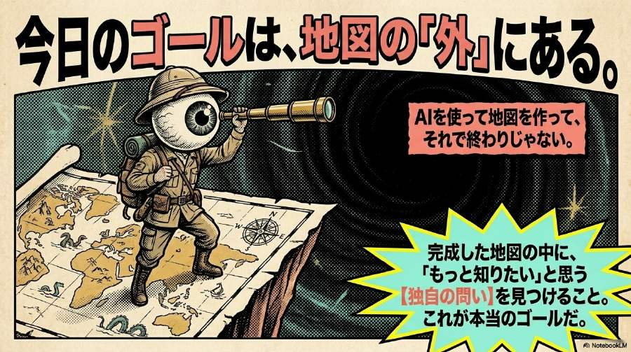
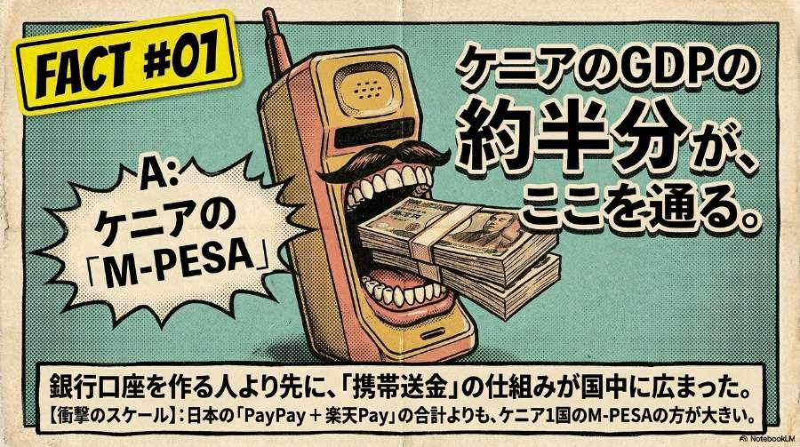
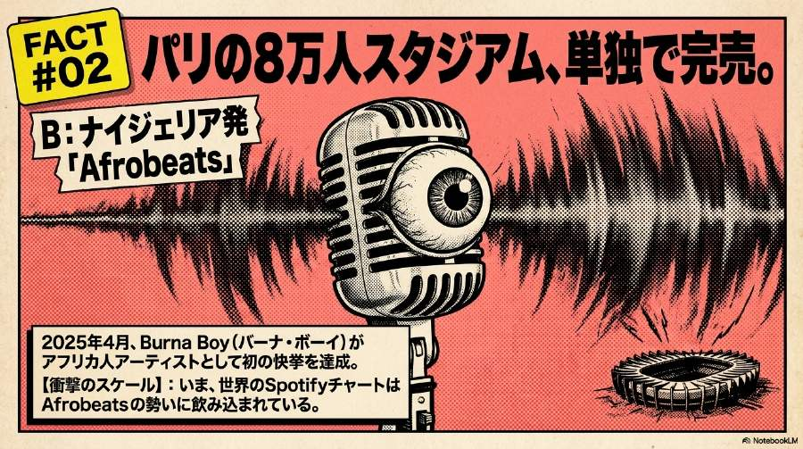
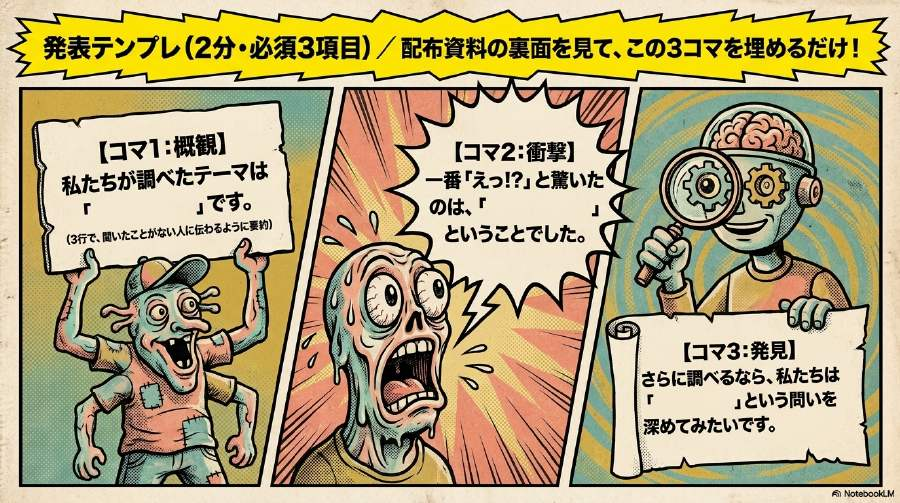
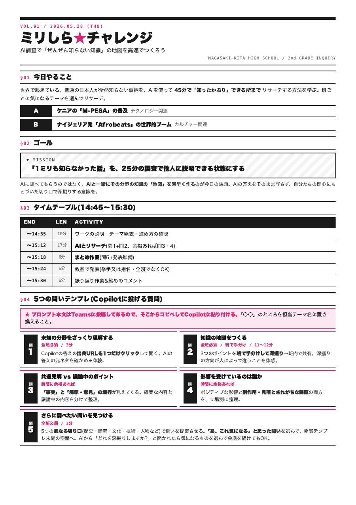
ワークシート作成で決めたこと：5つの問いのうち、全員がやるのは3つだけにしました（残り2つは時間が余った班だけ）。45分で回すなら、これ以上は入りません。
そして、AIに答えを聞かせない。答えではなく「自分では思いつかない切り口をたずねる」。そして、どれを深掘りするかは生徒が選ぶ。全てを任せてしまうと、AIの回答をコピペするだけの無思考になります。
ファクトチェックのための出典確認も、1回だけと決めました。AIの回答に付いている参照リンクをひとつ開いて、誰が書いた情報かを見る。授業では、全部を裏取りする時間はないので、まず1回やってみることを優先しています。
滑り出しで、AIツールをどこから開くかで手が止まる班がありました。次に使うときは、ツールの開き方と最初の一手を投影資料の冒頭に置きます。もうひとつは、初見のワークのルールを文字で素早く読み取ることを前提にしすぎていたこと。図解を増やしてルールの提示をよりグラフィカルにするなど、学校ごとに調整の余地があります。
夏を「打席に立つ」期間と定義しました。冒頭は「大谷選手だって打率3割＝7割は失敗している」という社会人メンターの話から始まりました。
アクションの5型：聞く／行く・見る／作る／試す／発信する。それぞれに、別テーマに置き換えた具体例を2つずつ添えています（「試す」＝7日間ある習慣を試して変化を記録／1週間のゴミを細かく分別して記録）。網羅性より「手が止まった子にアクションの入口を5つ見せて1つ選ばせる」形で選択肢を用意することで停滞を防ごうとしています。
学校で実際に刷られて配られるところまでが教材です。フルカラーで資料を作る場合は、モノクロでも可読性が落ちないコントラストを常に意識。モノクロ版は、黒地・白抜きの見出しバーとグレー濃淡だけで組み、色に依存しない。ガイドとシートは同じデザイン言語で揃え、2枚セットで配っても同じ資料に見えるようにしています。制作は HTML＋CSS の @page 指定から Chrome のヘッドレス印刷でPDF化。ワード経由だとA4の余白と行間の制御が効かず、1枚に収めたいものが2ページに割れるためです。
3〜4人の島をつくり、同じ班の生徒は同席させない。1人2分で夏の成果を話し、聞き手は1分でカードを書いてフィードバックを本人に手渡す。
当初は「各ゼミ5〜6班 × 1班5分の発表＋感想カード」で考えていました。変えた理由は3つあります。
(1) 発表の形にすると、生徒は前もって原稿を用意します。きれいにまとまる代わりに、その場のやりとりから出てくるものがなくなります。
(2) 1班5分の発表を順番に回すと、聞く側がコメントを返す時間が残りません。発表して終わり、になってしまう。
(3) 同じ話を、相手を変えて2回する。1回目にもらったフィードバックをその場で反映して2回目を話すので、学ぶことと試すことが同時に起きます。
ふわっとした興味関心のままの探究テーマを、自分達独自の問いと仮説として整理するワーク。場面 → ひっかかり・違和感 → 仮説の3手で、抽象的な探究テーマから問いと仮説を作ります。
シートに載せた例：探究テーマ「日本一美味しいたこ焼きを作りたい」／場面 祭りの屋台で列の長い店とすぐ買える店がある → 味はほぼ同じなのになぜ？ → 「列は味より、焼いているところが見えるかで決まる説」／探究テーマ「文化祭をバンドで盛り上げたい」文化祭で知らない曲になると客がスマホを見だす → 「サビが30秒以内に来る曲は、初めて聞いても盛り上がる説」など
生徒が提出した資料の中で自発的に使っていた言葉を、彼らに身近な語感があるとみなしそのまま採用。チェックは3点だけ——想定する場面が1つに絞れているか／言い切っているか（「〜かも」は禁止）／仮説の正誤が確かめられそうか。ネットで調べて仮説の答えがたくさん出るなら、それは説ではなく「調査」の対象なので、調べてから次の仮説を考える、という判別ルールを置いています。
行き先から決めません。まず自分たちの「説」を書き、それを確かめるには何が要るかを逆算して、最後に行き先を決める。シートを上から順に埋めると、その順番になります。
確かめ方の4つの型：A 行って見る／B 会って聞く／C 遠隔で聞く（メール・オンライン・支援しているメンターに聞くのもここ）／D 試す・作る。
民間の受け入れ側にとって心から迷惑なのは「そこまで興味はないが、授業で必須だから」で訪ねてこられることです。外部に依頼する班だけが埋める依頼前チェック6項目＋先生の確認サインを置きました。最初の2項目を「相手は誰で何の専門か」「なぜその人でないとダメか」にしているのは、そもそもその人である必要を先に問うため。聞きたいことがネットで調べて分かることなら差し戻し、お礼と結果の返し方が考えられていないならサインしない、依頼メールは生徒本人が送り先生をCCに。人に会う回は後半に寄せ、10月の1回目は外部と接点がなくても成立する内容にしています。
9名の社会人メンターは本業の合間に来るので、毎回は行けません。だから進行メモは「担当の先生が、この紙だけを見れば回せる」を要件にしています。先生用の進行メモには、必ず次の4点を入れます。
| パーツ | 中身 |
|---|---|
| 分単位の進行表 | 時刻つきで並べ、先生が読み上げる台本を鉤括弧で書いておく。50分と違う枠なら比例で調整、と明記する。 |
| 削る優先順位 | 時間が押したとき何から削るか、逆に絶対に削らないものを指定する（例：最後の班の作戦会議10分は削らない）。 |
| 想定トラブル対応表 | 実際に起きたことベースで書く。「場面が出ない班には、最後に飲んだのはいつ？どこで？と直近の体験を聞く」「テーマが遠い班（戦争・環境）は地元で見られる場面に引き寄せる」「全班が『会って聞く』を選んだら、会わないと分からないこと？と聞き返す」。 |
| 確認の目線 | 先生が判断に迷わないよう基準を言語化する。「聞きたいこと3つがネットで分かることなら差し戻し」「お礼と結果の返し方が空欄ならサインしない」。 |
印刷面の制約も設計に入れています。白黒印刷で潰れないデザイン（黒地・白抜きの見出しバーとグレー濃淡のみ、色に依存しない）、A4片面または両面で完結、生徒用と先生用は同じデザイン言語で揃える。学校で実際に刷られて配られるところまでが教材です。
探究支援のきっかけは、2020年7月の豪雨で被災した熊本・人吉球磨を支援するために当組合が始めた「えん卓プロジェクト」。その一環として、2021年2月11日に佐世保西高と「チョコっとお人吉プロジェクト」を実施しました。西高の生徒たちが、地元の菓子店（さいかい堂）の協力を得て、佐世保と人吉球磨の食材を使ったバレンタインスイーツを開発し、四ヶ町商店街で売る——という企画で、当組合がコーディネートを担いました。
結果は、販売開始からおよそ1時間で、用意した約1000個が完売。その売上は寄付となり、できあがったスイーツは被災地の球磨中央高校の生徒たちへ贈るバレンタインスイーツになりました。
生徒たちは各班に分かれて準備していました。お菓子をつくる班、パッケージとチラシをつくる班、会場の設営を考える班。当日その場で驚いたのは、仕事の丁寧さです。商品案内のポップ、パッケージ、募金箱の選び方と加工、会場の並び位置を示す地面のビニールテープ、場内アナウンスの原稿。ひとつひとつに自分たちで知恵を絞った痕跡があって、「授業で言われたのでやりました」という受け身の気配がまったくありませんでした。
若い世代のこの姿を見て、彼ら彼女たちがのびのび活躍できる環境を、大人の側が整える義務がある——と改めて考えるようになりました。いまも続けている探究の支援は、全部ここから始まっています。
受け取った側の記録が、熊本県立球磨中央高校のブログに残っています。
長崎北高のような通年の探究支援以外に、県内の各高校からスポットで依頼された授業や発表会にも参加しています。ここでも教材は毎回その学校のために作ります。
五島海陽高校から「探究活動に入る前の1年生に話してほしい」と依頼がありました。前日に島へ入り、3・4校時の2コマを担当。前半は講義、後半はその日のために、身近な五島の課題をテーマに新たに作ったワークシートで授業を行いました。
五島の生徒にとって身近な課題の解決方法を、自分の強みや個性と照らし合わせて、複数の選択肢から選ばせるのがこのワークの骨子です。「地域課題に取り組みなさい」といきなり言われても、よく耳にする課題のスケールは大きすぎて、生徒の手が届かず、なかなか動き出せません。そこで、生徒の個性別にどんな課題の砕き方があるかを例示し、取り組めそうな課題を考えてもらいます。
同じ年の12月には、1年間の集大成である「海陽発表会」（10時〜15時）に指導助言者として再訪しました。県の高校教育課からの講評者と2名体制での登壇となりました。
文部科学省のスーパーサイエンスハイスクール（SSH）指定校の企画に、2年続けて講師として呼ばれています。ポスターセッション形式で、生徒の研究に対面で対話しながらフィードバックする形式です。
「クレイジーキルトの織り方」と名づけたこのシートは、優れた起業家が実践しているというエフェクチュエーションの論理を、探究向けにアレンジしたオリジナルのカードゲームです。外部の大人を巻き込む技術そのものを教材にしました。相手の関心を調べる → 自分のプロジェクトと重なる点を探す → 何をお願いするか決める → その依頼が相手にどんな価値を返すかまで書く。北高のフィールドワークで使っている「依頼前チェック」をより深掘りしたワークです。
マイプロジェクト長崎県Summit（10章）は年に1度です。それだけでは、テーマが決まらず止まっている探究途中の生徒には支援が届きません。そこでプレ企画として、オンラインの相談会を独自で立ち上げました。高校生が関心分野から社会人サポーターを選び、30分・少人数・無料で相談できる。申込サイトも自前で構築しました。
第1回の実績：申込20名（長崎南山高2年10名／五島海陽高1年10名）、メンター6名、9枠、4日間。定期テストと大部分がかぶる時期でしたが、それでも「相談したい」と生徒の手が挙がりました。事後アンケートの回収は参加20名中11名、満足度 平均4.7／5・学びの度合い 4.6／5、「自分の探究を進めたい」と答えたのが9名。
伴走スタイルも2つに分かれました。生徒の話を整理して足場を組む「足場提供型」と、自分の世界を見せて視野を広げる「世界観提示型」。どちらが良いというより、生徒の段階で必要なものが違います。
全メンターが生徒に共通して出した処方箋は「ターゲットを具体まで絞らせること」でした。「地域を元気に」では動けない。誰の、どの場面の、何を、あるいは〇〇さん、△△君まで降ろすと次の一歩が見えてきます。
学校によって探究の出発点が逆だったのも興味深い発見でした。離島の高校生は「好き」が起点、長崎市内の高校生は「社会課題」が起点。どちらが良いではなく、それぞれにあった支援のやり方があります。
高校生に伴走する地域の大人が足りません。そして、探究を学生時代にやったことがない大人が伴走するのは、なかなか難しい。だったらまず自分たちでやってみよう——という発想で始まった、教員と地域の伴走者向けのプログラムです。一般社団法人 共感結社モルタルの事業で、西海みずき信用組合からは西信が理事として参画しています。
三菱みらい育成財団の採択事業（2025年度から3年設計：育成 → 実践 → 定着）。
探究の質は、伴走する大人の量で決まる。西海みずき信用組合の高校生向けの支援と、一社モルタルの、大人向けのこの講座は、同じ問題の裏表からのアプローチだと考えています。
1. 正解主義を崩す 手が止まる原因の多くは発想力ではなく「間違えたくない」。失敗の許可、失敗の自由を授業のあちこちに埋め込む。
2. 自由に考えてと言わない。補助線を引く アクションの5型、確かめ方の4型など、選択肢を並べて「1つ選ぶ」形に落とす。
3. アクション先行。リサーチ先行にしない 何か1つやってみることで、調べるべきことが見えてくる。
4. 評価者を置かない場面をつくる 例えば、成果の共有を発表会ではなく作戦会議にする。毎年行う探究の発表大会でも当日は順位を競わせないなど。
5. 社会人メンターが入れなくなる前提で考える 生徒用シート・先生用進行メモ・指導案を毎回セットで作る。
6. 既存教材を使わず、毎回つくる 生徒の空気感・先生が育てたい力・限られた50分。ベストな効果を踏まえると結局カスタムメイドになる。
テーマ決めシートでは、半数近くの班で問い・仮説の欄が空欄に。書けなかったのではなく、何を書けばいいか分からなかった。ここに気づいてから「場面を書く → ひっかかりを書く → 説にする」と3手に割り、1コマ使って仮説だけをつくる回を独立させました。問いが立たないのは生徒の問題ではなく、問いの立て方を分解していないこちらの問題だと考えています。
メンターが班を回って相談に乗る回では、順番に呼ぶと探究に関心の薄い班にも均等に時間を取られます。意欲のある班から自由に前に来てもらうほうが、限られたメンターの時間を活かせます。
荒天の連続休校で定期考査がずれ、探究の授業枠が玉突きで動きました。社会人メンターは仕事の合間に来るので、日程変更はそのまま参加人数の減少になります（予定6名が3名になった回があります）。メンターが半分でも成立する設計にしておくと安全です。
2025年末から2026年初頭にかけて、AIエージェントの高度化が急速に進みました。いまの高校生が大学を卒業する2031〜2032年ごろには、これまで人間がやってきたホワイトカラー業務の相当な部分が置き換わっていく——それは、まずは新卒採用枠の減少として——という未来を、私たちは懸念しています。今まで評価されてきた、「与えられたタスクを真面目に早く正確にこなす」だけでは役割が成立しにくい時代に、いま教育に関わる人間は生徒に何を渡せるか。現場に関わるほど、探究学習で身につく力は、そのまま「これからを生き抜く力」にもなるのではという実感が強くなっています。
これは子どもたち個人のためだけの話ではありません。未来の地域経済の主役になるのは、最終的に次世代の担い手である今の若者たちです。時代に適応し、自分の頭で考え、地域の課題に自分なりのアプローチで挑む若者が育たなければ、5年後10年後の地域社会そのものが立ち行かない。地域で商売をする側にとって、差し迫ったリスクだと考えています。
だから一般に思われる金融の業務を多少はみ出してでも関わる。一緒に動いているメンターがそれぞれの専門性を持ち寄って、ボランティアで関わり続けてくれているのも、「地域の未来は地域の大人が責任を持って育てるしかない」という感覚が共通しているからだと思います。
長崎北高支援のメンターチーム：竹下 スティーブ（フリーランスコンサルタント）／林田 光弘（一般社団法人 Peace Education Lab Nagasaki 代表理事）／山野 里紗（長崎北高OG・福岡女子大学）／田口 未侑（長崎北高OG・大学生）／石丸 徹郎（ISIALグループ 代表）／森 恭佑（株式会社つくるのわデザイン）／芳野 裕美（FM長崎 パーソナリティ）／小岱 海（教宗寺 僧侶）／西信 好真（西海みずき信用組合 地域振興室・コーディネート） ※順不同・敬称略
全国高校生マイプロジェクトアワード（認定NPO法人カタリバ）の長崎県大会です。主催は西海みずき信用組合。県内各地の高校生が自分の探究を持ち寄り、社会人サポーターと対話して「次の一歩」を持ち帰る場をつくっています。
2025年度の実績：県内8校から26プロジェクト・高校生82名が参加（エントリーは38プロジェクト）。社会人サポーター23名。会場は長崎国際大学。当日は8教室に分かれて10分発表＋社会人と10分討論、教室の代表チームが再度発表、全国大会向けの動画制作まで行いました。
運営の実態：地域振興室の2名を中心に回しています。社会人サポーターの人選と事前ブリーフィング、会場案内・パンフレットのデザイン、協賛企業との調整、高校への周知、当日の進行など。
同じ悩みを持つ学校・教育関係者の方には、個別にご相談のうえで教材をお渡しできます。そのまま使えるものと、生徒の状況に合わせて組み替えたほうがよいものがあるので、まずは「何をしたいか」からご相談いただければと思います。
ご連絡は 西信好真のポートフォリオサイト からどうぞ。